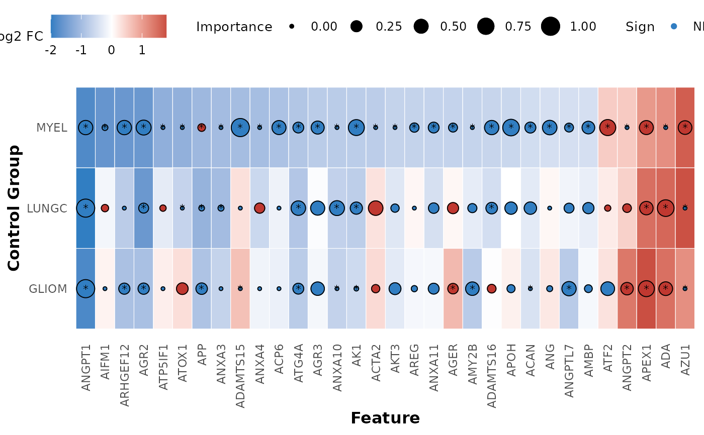

hd_plot_feature_heatmap plots a summary bubble-heatmap of the combined differential
expression and classification model results. The heatmap shows the log2 fold change
and adjusted p-value of the differential expression results, and the scaled importance
and sign of the classification model results. The heatmap is ordered and the selected
assays are based on the specified control group. * are added to the features that pass
the p-value threshold.
Usage
hd_plot_feature_heatmap(
de_results,
model_results,
order_by,
pval_lim = 0.05,
logfc_lim = 0
)Arguments
- de_results
A list of differential expression results.
- model_results
A list of classification models results.
- order_by
The control group to order the heatmap.
- pval_lim
The p-value limit to filter the differential expression results of the
order_bygroup.- logfc_lim
The log2 fold change limit to filter the differential expression results of the
order_bygroup.
Value
The summary heatmap of the combined differential expression and classification models results.
Details
It is very important the de_results and model_results are in the same order and in the right format (see examples).
Examples
# Initialize an HDAnalyzeR object
hd_object <- hd_initialize(example_data, example_metadata)
# Run differential expression analysis for AML vs all others
de_results_myel <- hd_de_limma(hd_object, case = "AML", control = "MYEL")
de_results_lungc <- hd_de_limma(hd_object, case = "AML", control = "LUNGC")
de_results_gliom <- hd_de_limma(hd_object, case = "AML", control = "GLIOM")
res_de <- list("MYEL" = de_results_myel,
"LUNGC" = de_results_lungc,
"GLIOM" = de_results_gliom)
# Run Classification models
# Split the data into training and test sets
hd_split <- hd_split_data(hd_object, variable = "Disease")
#> Warning: Too little data to stratify.
#> • Resampling will be unstratified.
# Run the regularized regression model pipeline
model_results_myel <- hd_model_rreg(hd_split,
variable = "Disease",
case = "AML",
control = "MYEL",
grid_size = 2,
cv_sets = 2,
verbose = FALSE)
#> The groups in the train set are balanced. If you do not want to balance the groups, set `balance_groups = FALSE`.
model_results_lungc <- hd_model_rreg(hd_split,
variable = "Disease",
case = "AML",
control = "LUNGC",
grid_size = 2,
cv_sets = 2,
verbose = FALSE)
#> The groups in the train set are balanced. If you do not want to balance the groups, set `balance_groups = FALSE`.
model_results_gliom <- hd_model_rreg(hd_split,
variable = "Disease",
case = "AML",
control = "GLIOM",
grid_size = 2,
cv_sets = 2,
verbose = FALSE)
#> The groups in the train set are balanced. If you do not want to balance the groups, set `balance_groups = FALSE`.
# The models are in the same order as the DE results
res_model <- list("MYEL" = model_results_myel,
"LUNGC" = model_results_lungc,
"GLIOM" = model_results_gliom)
# Create the summary heatmap
hd_plot_feature_heatmap(res_de, res_model, order_by = "MYEL")
